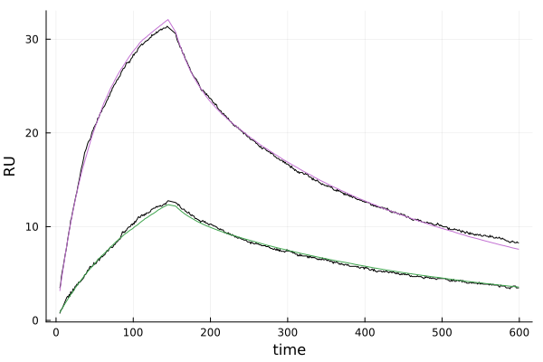

Fitting to SPR Data
In this tutorial we will illustrate how to fit the surrogate model to SPR data to estimate $k_{\text{on}}$, $k_{\text{off}}$, k_{\on,b} serial on any computer, and our workflow for building large surrogates on clusters (specific to the Grid Engine queuing system based cluster we use).
Setup
We begin by installing the packages we need in a clean environment:
using Pkg
# create a new environment for the surrogate constructions
Pkg.activate("fitting_env")
Pkg.add(url="https://github.com/isaacsas/SPRFittingPaper2023.jl.git")Estimating Best Fit Parameters to an SPR Dataset
We wil work with the same SPR dataset as in the Forward Model Simulation tutorial. As described in [1], our general approach will be to use the XNES optimizer from BlackBoxOptim.jl to minimize the difference between the SPR data and the surrogate's predicted SPR traces. XNES is a stochastic natural evolution optimizer that we have found often gives the best fits among many optimizer choices. We use this optimizer via Optimization.jl, which allows for the easy selection of different optimizer choices. As XNES is stochastic, we will run the parameter estimation process nfits times, and select parameters from the run with the minimal loss as our final estimates.
We'll use the full surrogate from [1], which can be downloaded here.
We being by defining some variables related to the fitting process:
nfits = 100 # how many fits to run and then take the minimum over
nsims = 250 # number of simulations to average when plotting
logCP_optrange = (1.0, 5.0) # allowable log-space range of CP values Next we set the location of the surrogate:
surfile = "PATH_TO_DOWNLOADED_SURROGATE.jld"We are now load the surrogate and SPR data:
# load the surrogate
surrogate = Surrogate(surfile)
sps = surrogate.surpars
# range of CP values to use
optpar_ranges = [logCP_optrange]
# load the aligned SPR data from input CSV file
datadir = joinpath(@__DIR__, "..", "..", "data")
aligned_data_fname = joinpath(datadir, "Data_FC4_10-05-22_Protein07_FD-11A_RBD-13.8_aligned.csv")
aligneddat = get_aligned_data(aligned_data_fname)Finally, we now run the optimizer nfits times, taking as our parameter estimates the fit with the mimimal loss:
optsol, best_pars = fit_spr_data(surrogate, aligneddat, optpar_ranges)
for i in 2:nfits
optsol_new, best_pars_new = fit_spr_data(surrogate, aligneddat, optpar_ranges)
if optsol_new.minimum < optsol.minimum
optsol = optsol_new
best_pars = best_pars_new
end
endWe find the best fit parameters, [kon, koff, konb, reach, CP], are
best_pars = [5.2859956892261876e-5, 0.04086857480653136, 0.7801815024260655, 31.898843844047246, 128.56923492479402]We can now plot (and output) a figure comparing our fits to the SPR data
# number of simulations to average over in making the plot
simpars.nsims = nsims
# save a figure showing the fit to the SPR data
OUTDIR = tempdir()
figfile = joinpath(OUTDIR, "fit_curves.png")
visualisefit(optsol, aligneddat, surrogate, simpars, figfile)Which gives

Here the SPR data is shown in black and the average predicted responses in color. Finally, we can save a spreadsheet with our fits and parameter estimates via
curvefile = joinpath(OUTDIR, "parameters.xlsx")
savefit(optsol, aligneddat, surrogate, simpars, curvefile)For this example the file here shows the resulting Excel spreadsheet. Note that the second sheet within it shows the parameter estimates.
General Workflow
A more detailed workflow that processes multiple SPR inputs, includes monovalent fits, and systematically writes output files for each fit can be downloaded here. This file contains three sub-folders:
- Experiments contains a set of CSVs corresponding to processed SPR experiments for fitting.
- Code contains a file "readme.md" with instructions on how to use/modify the included "ParameterFitting_Example.jl" script to fit a collection of experiments.
- Surrogates is where you should place the downloaded surrogate from the manuscript, which is available here (or place whatever surrogate you wish to use).
Bibliography
- A. Huhn, D. Nissley, ..., C. M. Deane, S. A. Isaacson, and O. Dushek, Analysis of emergent bivalent antibody binding identifies the molecular reach as a critical determinant of SARS-CoV-2 neutralisation potency, in review, available on bioRxiv (2024).